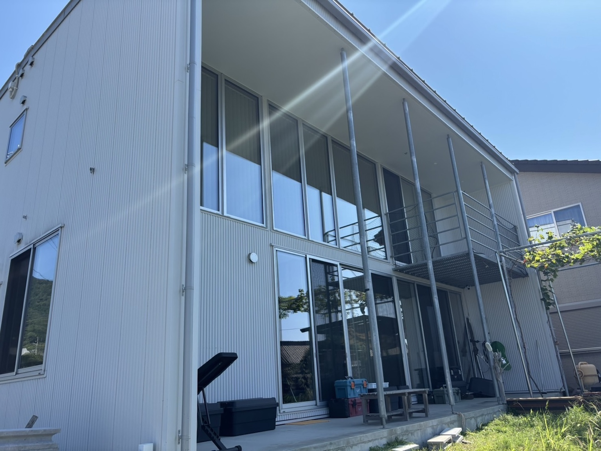

洗練された外観
無駄をそぎ落とした直線的なフォルム。大きなガラス面からはやわらかな光が差し込み、四季の移ろいをそのまま絵画のように切り取ります。落ち着いた色合いで、非日常へと自然にいざないます。
無駄をそぎ落とした直線的なフォルム。大きなガラス面からはやわらかな光が差し込み、四季の移ろいをそのまま絵画のように切り取ります。落ち着いた色合いで、非日常へと自然にいざないます。
木の質感とやさしい照明がお迎えするエントランス。旅の疲れをふっと忘れる、穏やかな第一印象を大切にしています。
海と緑に囲まれた高台の静けさ。朝は鳥の声、夜は満天の星。喧騒から距離を置き、心地よい余白を取り戻す時間が流れます。